Snakes of Italy
22 living snake species are recorded in Italy in SnakeList: 8 venomous and 14 non-venomous, from 4 families. 3 fossil species found here are listed separately and not counted.
- 22living species
- 4families
- 3fossil, not counted
Danger to people · tap a number to show only those snakes
- 0giant constrictors
Harmful = dangerously venomous + giant constrictors. HarmlessLow risk = not venomous and not a giant constrictor. Mildly venomous snakes have no serious bites to people documented. Any snake can bite.
These totals count the unique living snake species SnakeList records in Italy; the 3 fossil species found here are listed separately and not counted. The 1 species brought here by people (introduced, not native) is listed separately below and is not in the total. A species counts if it is recorded anywhere in the country, so not every snake lives in every part of it.
In SnakeList’s checklist filters
How many of the 22 living species here each filter in the SnakeList app picks out – tap a number to show only those snakes. The app’s own counts for Italy also include the 3 fossil species listed separately below.
Snake family4 types, 4 families
Type
Family
Habitats13 habitat groups
Habitats are estimated from where each snake is recorded and what kind of snake it is, as in SnakeList; a snake can count in several.
Characteristics8 venomous, 8 constrictors
Constrictor and Non-constrictor count only snakes whose family or genus is documented as constricting or not; the rest are not documented.
Other filters1 popular, 2 rare
Species
Showing 22 species
 Aesculapian SnakeZamenis longissimus
Aesculapian SnakeZamenis longissimus Asp ViperVipera aspis
Asp ViperVipera aspis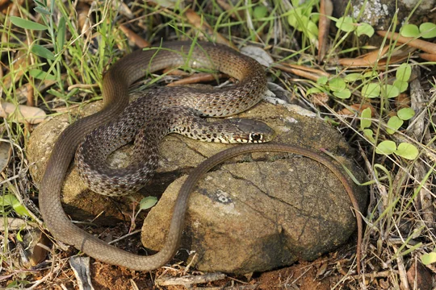
Balkan Whip SnakeHierophis gemonensis Cat SnakeTelescopus fallax
Cat SnakeTelescopus fallax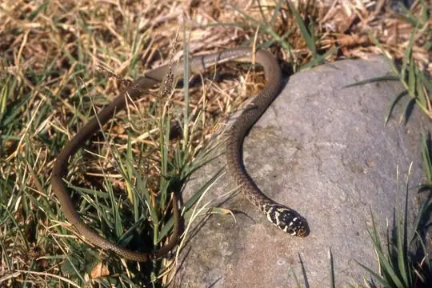
Dark Green SnakeColuber viridiflavus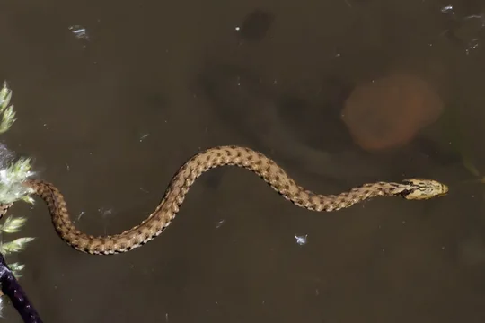
Dice SnakeNatrix tessellata European AdderVipera berus
European AdderVipera berus False Smooth Snake (cucullatus)Macroprotodon cucullatus
False Smooth Snake (cucullatus)Macroprotodon cucullatus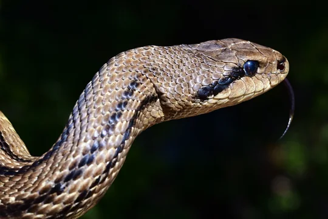
Four-lined SnakeElaphe quatuorlineata Grass SnakeNatrix natrix
Grass SnakeNatrix natrix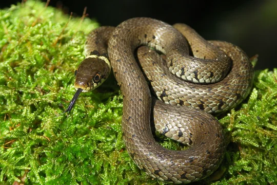
Grass Snake (helvetica)Natrix helvetica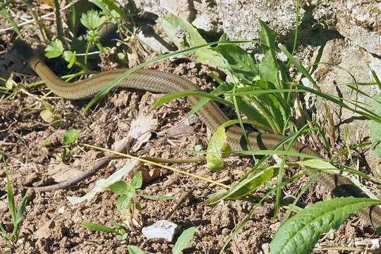
Italian Aesculapian SnakeZamenis lineatus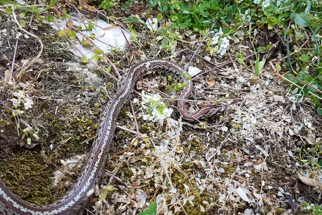
Leopard SnakeZamenis situla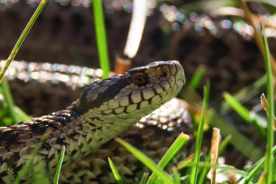
Meadow ViperVipera ursinii Montpellier SnakeMalpolon monspessulanus
Montpellier SnakeMalpolon monspessulanus Nose-horned ViperVipera ammodytes
Nose-horned ViperVipera ammodytes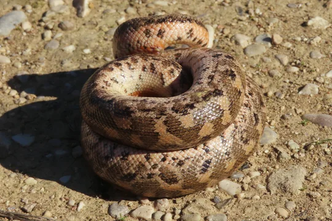
Sand Boa (jaculus)Eryx jaculus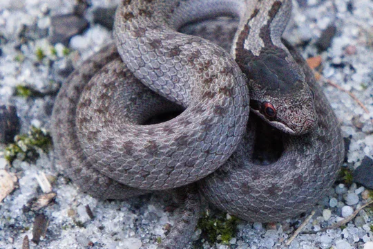
Smooth SnakeCoronella austriaca Southern Smooth SnakeCoronella girondica
Southern Smooth SnakeCoronella girondica Viperine SnakeNatrix maura
Viperine SnakeNatrix maura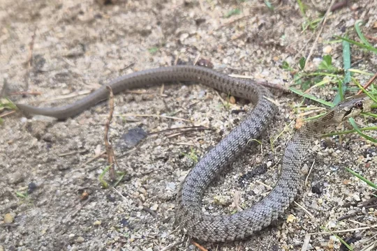
Elaphe lineata- No photo yetVipera illyrica
No snakes in Italy match.
Introduced to Italy
Not native here: SnakeList records this snake as brought to Italy by people.

Fossil snakes found here
These snakes are known only from fossils found in Italy. They are not living species and are not counted in this page’s totals. The geological ages given are approximate: they come from the rock layers the fossils were found in, and the dating and classification of fossil snakes are revised as new material is studied.
- Archaeophis Archaeophis proavus (early Eocene, about 49 million years ago)
- Nanus planicarinatus (late Miocene, about 8 million years ago)
- Paleoheterodon arcuatus (late Miocene, about 6.5 million years ago)
Italy’s snakes in numbers
- Families: Colubridae 15, Viperidae 5, Boidae 1, Psammophiidae 1.
- 2 are recorded in no other country or territory in SnakeList: Italian Aesculapian Snake, Elaphe lineata.
How precisely they are recorded
Of the 22 living species recorded in Italy, 17 are recorded by region in SnakeList’s data; 5 are recorded only for Italy as a whole, so the region pages list them as possible rather than recorded. SnakeList records each species by region, not by exact spot, so a species listed for a region may live in only part of it.
Regions
The regions where SnakeList records snakes, with how many living species are recorded in each. Each page has its species, venomous snakes, families, the species found only there, its cities and neighbours.
- Abruzzo 8 species
- Apulia 7 species
- Basilicata 6 species
- Calabria 5 species
- Campania 7 species
- Emilia-Romagna 8 species
- Friuli-Venezia Giulia 8 species
- Lazio 8 species
- Liguria 8 species
- Lombardia 8 species
- Marche 8 species
- Molise 6 species
- Piemonte 7 species
- Sardegna 1 species
- Sicily 7 species
- Toscana 7 species
- Trentino-Alto Adige 9 species
- Umbria 8 species
- Valle d'Aosta 6 species
- Veneto 8 species
No place matches that.
Cities
Its biggest cities, biggest first. SnakeList records snakes by region, not by city, so each city page shows the species recorded in its region and, separately, those only possible there - not species confirmed in the city.